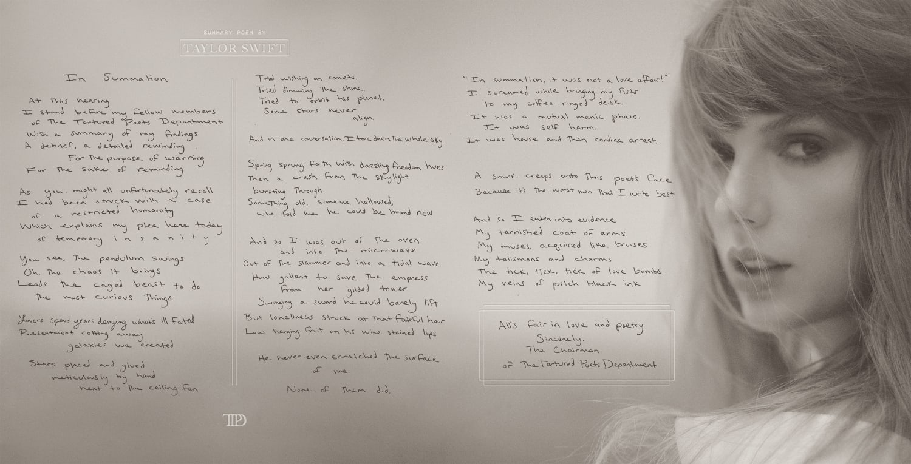

Morganite is going to haunt you down
He is going an adventure for revenge.
Bu gerçekten benim aklıma gelebilecek en son şeydi WEBSITE TASARLAMAK
*Chris eline telefon alıp bütün yarışmacıları arar ve herkese ekstra bir sezon için teklif eder ve bu sefer ödülü >3 milyon dolara çıkarır*
Chris: Merhaba okurlar yeni bir sezon ile karşınızdayım.
Bu sezon diğer sezonlardan farklı olarak iki takıma ayrılcak yine ve takımlar kötü adamlar yani villains diğer tarafta da iyiler yani kahramanlar ingilizcesi olan heroes olacak.
*Chris takım bayraklarının önüne gelir*
Chris: Evet burası among us gemisi ve burda üçüncü sezonu oynayacak yarışmacılarımızı aradığımızda üçüncü bir sezonu oynamayı kabul ettiler! He gerçi kabul etmeyenler oldu tabi ki ama biz onları zorla getiriyoruz bu sefer ve not olsun Leaf’in isteği üzerine değil yarışmacıların isteği üzerine getirtiriyoruz. VEE YARIŞMACILARIMIZ BURADALAR!
Eğer buraya kadar okuduysan bravo şimdi birazcık aklımızı kaçırma zamanı.
Bütün işkence görmüş ablalarım toplanın iki haftalık yolculuğa çıkıyoruz. Fortnight


THE TORTURED POETS DEPARTMENT
- Fortnight (feat. Post Malone)
- The Tortured Poets Department
- My Boy Only Breaks His Favorite Toys
- Down Bad
- So Long, London
- But Daddy I Love Him
- Fresh Out The Slammer
- Florida!!! (feat.Florence + the Machine)
- Guilty as Sin?
- Who's Afraid of Little Old Me?
- I Can Fix Him (No Really I can)
- Loml
- I Can Do It With a Broken Heart
- The Smallest Man Who Ever Lived
- The Alchemy
- Clara Bow
- Thoughts In Purple Room
- Second Incident
- Shy Boy Lives Under Greens
- Anti Virtuous
- Midnight Lullabies
- Yeah, I know
- Love struck
- The Exception
- Nine Days Wonder
- Bonus Track: Mistaken (Unreleased for Melancholia)
- Ben bir ineğim mö mö
- Ben bir ineğim mö mö
| Yıl |
Ay |
Çıkan Albüm |
| 2024 |
Nisan |
The Tortured Poets Department |